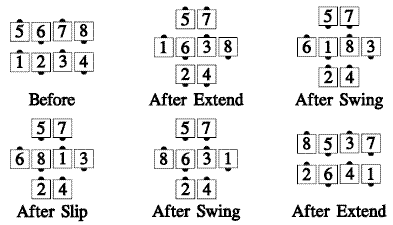
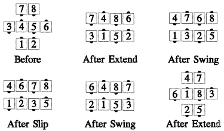

From waves only: Those facing out do a Scoot Back, while those facing in Extend, Swing, Slip, Swing, and Extend. Ends in waves.

From quarter tag: All Extend, Swing, Slip, Swing, and Extend. Ends in three quarter tag.

For teaching: The centers' part can be thought of as a Swing Thru 1½—Extend or Left Swing Thru 1½—Extend, depending on what hand was held in the wave.
Timing: 12